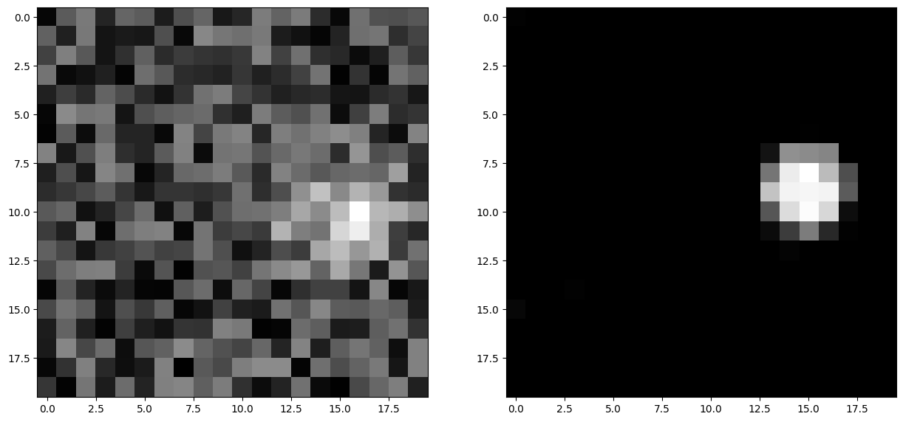

#!pip install ANNarchyNeural Field


This notebook demonstrates a simple rate-coded model using Neural Fields. It consists of two 2D populations inp and focus, with one-to-one connections between inp and focus, and Difference-of-Gaussians (DoG) lateral connections within focus.
Model overview
Each population consists of N*N neurons, with N=20. The inp population is solely used to represent inputs for focus. The firing rate of each neuron is defined by a simple equation:
r_i(t) = (\text{baseline}_i(t) + \eta(t))^+
where r_i(t) is the instantaneous firing rate, \text{baseline}_i(t) its baseline activity, \eta(t) an additive noise uniformly taken in [-0.5, 0.5] and ()^+ the positive function.
The focus population implements a discretized neural field, with neurons following the ODE:
\tau \frac{d r_i(t)}{dt} + r_i(t) = r^\text{input}_i(t) + \sum_{j=1}^{N} w_{j, i} \cdot r_j(t) + \eta(t)
where r_i(t) is the neuron’s firing rate, \tau a time constant and w_{j, i} the weight value (synaptic efficiency) of the synapse between the neurons j and i. f() is a semi-linear function, ensuring the firing rate is bounded between 0 and 1.
Each neuron in focus takes inputs from the neuron of inp which has the same position, leading to a one_to_one connection pattern.
The lateral connections within focus follow a difference-of-Gaussians (dog) connection pattern, with the connection weights w_{i,j} depending on the normalized euclidian distance between the neurons in the N*N population:
w_{j, i} = A^+ \cdot \exp(-\frac{1}{2}\frac{d(i, j)^2}{\sigma_+^2}) - A^- \cdot \exp(-\frac{1}{2}\frac{d(i, j)^2}{\sigma_-^2})
If i and j have coordinates (x_i, y_i) and (x_j, y_j) in the N*N space, the distance between them is computed as:
d(i, j)^2 = (\frac{x_i - x_j}{N})^2 + (\frac{y_i - y_j}{N})^2
Inputs are given to the network by changing the baseline of inp neurons. This example clamps one or several gaussian profiles (called “bubbles”) with an additive noise, moving along a circular path at a certain speed (launch the example to understand this sentence…).
Importing ANNarchy
We first start by importing the numpy and ANNarchy libraries:
import numpy as np
import ANNarchy as ann
ann.clear() # needed in case you rerun the notebookANNarchy 4.8 (4.8.0) on darwin (posix).If you want to run the simulation on your graphic card instead of CPU, simply uncomment the following line:
#ann.setup(paradigm="cuda")The setup() method allows to configure ANNarchy to run in different modes, such as chosing the parallel framework (omp or cuda), setting the simulation step dt, the numerical method method or the seed of the random number generators.
Defining the neurons
Input neuron
InputNeuron = ann.Neuron(
parameters="""
baseline = 0.0
""",
equations="""
r = pos(baseline + Uniform(-0.5, 0.5))
"""
)Defining the input neuron is straightforward. InputNeuron is here an instance of Neuron, whose only parameter is baseline (initialized to 0.0, but it does not matter here as it will be set externally).
The firing rate of each neuron, r, is updated at every time step as the positive part (pos()) of the sum of the baseline and a random number taken from a uniform distribution between -0.5 and 0.5.
Neural Field neuron
NeuralFieldNeuron = ann.Neuron(
parameters="""
tau = 10.0 : population
""",
equations="""
tau * dr/dt + r = sum(exc) + sum(inh) + Uniform(-0.5, 0.5) : min=0.0, max=1.0
"""
)The second neuron we need is a bit more complex, as it is governed by an ODE and considers inputs from other neurons. It also has a non-linear activation function, which is linear when the firing rate is between 0.0 and 1.0, and constant otherwise.
tau is a population-wise parameter, whose value will be the same for all neuron of the population.
r is the firing rate of he neuron, whose dynamics are governed by a first-order linear ODE, integrating the sums of excitatory and inhibitory inputs with noise.
As explained in the manual for rate-coded neurons, sum(exc) retrieves the weighted sum of pre-synaptic firing rates for the synapses having the connection type exc, here the one_to_one connections between inp and focus. sum(inh) does the same for inh type connections, here the lateral connections within focus.
The firing rate is restricted to the range [0, 1] by setting the min and max accordingly in the flags section (everything after the :). This means that after evaluating the ODE and getting a new value for r, its value will be clamped if it outside these values. One can define both min and max, only one, or none.
Creating the populations
The two populations have a geometry of (20, 20), therefore 400 neurons each. They are created simply by instantiating the Population class:
N = 20
inp = ann.Population(geometry = (N, N), neuron = InputNeuron, name='Input')
focus = ann.Population(geometry = (N, N), neuron = NeuralFieldNeuron, name='Focus')The populations can be assigned a unique name (here ‘Input’ and ‘Focus’) in order to be be able to retrieve them if the references inp and focus are lost. They are given a 2D geometry and associated to the corresponding Neuron instance.
Creating the projections
The first projection is a one-to-one projection from Input to Focus with the type ‘exc’. This connection pattern pattern is possible because the two populations have the same geometry. The weights are initialized to 1.0, and this value will not change with time (no learning), so it is not necessary to define a synapse type:
ff = ann.Projection(pre=inp, post=focus, target='exc')
ff.connect_one_to_one(weights=1.0, delays = 20.0)<ANNarchy.core.Projection.Projection at 0x12ca91cd0>The references to the pre- and post-synaptic population (or their names), as well as the target type, are passed to the constructor of Projection. The connector method connect_one_to_one() is immediately applied to the Projection, defining how many synapses will be created. The weights are initialized uniformly to 1.0.
The second projection is a difference of gaussians (DoG) for the lateral connections within ‘focus’. The connector method is already provided by ANNarchy, so there is nothing more to do than to call it with the right parameters:
lat = ann.Projection(pre=focus, post=focus, target='inh')
lat.connect_dog(amp_pos=0.2, sigma_pos=0.1, amp_neg=0.1, sigma_neg=0.7)<ANNarchy.core.Projection.Projection at 0x13cc49cd0>Compiling the network and simulating
Once the populations and projections are created, the network is ready to be generated, compiled and simulated. Compilation is simply done by calling compile():
ann.compile()This generates optimized C++ code from the neurons’ definition and network structure, compiles it with gcc/clang and instantiates all objects, particularly the synapses. If some errors were made in the neuron definition, they will be signaled at this point.
Hint: The call to compile() is mandatory in any script. After it is called, populations and projections can not be added anymore.
Once the compilation is successful, the network can be simulated by calling simulate():
ann.simulate(1000.0) # simulate for 1 secondAs no input has been fed into the network, calling simulate() now won’t lead to anything interesting. The next step is to clamp inputs into the input population’s baseline.
Setting inputs
Pure Python approach
In this example, we consider as input a moving bubble of activity rotating along a circle in the input space in 5 seconds. A naive way of setting such inputs would be to access population attributes (namely inp.baseline) in a tight loop in Python:
angle = 0.0
x, y = np.meshgrid(np.linspace(0, 19, 20), np.linspace(0, 19, 20))
# Main loop
while True:
# Update the angle
angle += 1.0/5000.0
# Compute the center of the bubble
cx = 10.0 * ( 1.0 + 0.5 * np.cos(2.0 * np.pi * angle ) )
cy = 10.0 * ( 1.0 + 0.5 * np.sin(2.0 * np.pi * angle ) )
# Clamp the bubble into pop.baseline
inp.baseline = (np.exp(-((x-cx)**2 + (y-cy)**2)/8.0))
# Simulate for 1 ms
ann.step() angle represents the angle made by the bubble with respect to the center of the input population. x and y are Numpy arrays representing the X- and Y- coordinates of neurons in the input population. At each iteration of the simulation (i.e. every millisecond of simulation, the bubble is slightly rotated (angle is incremented) so as to make a complete revolution in 5 seconds (5000 steps). cx and cy represent the coordinates of the center of the bubble in neural coordinates according to the new value of the angle.
A Gaussian profile (in the form of a Numpy array) is then clamped into the baseline of inp using the distance between each neuron of the population (x and y) and the center of the bubble. Last, a single simulation step is performed using step(), before the whole process starts again until the user quits. step() is equivalent to simulate(1), although a little bit faster as it does not check anything.
Although this approach works, you would observe that it is very slow: the computation of the bubble and its feeding into InputPop takes much more time than the call to step(). The interest of using a parallel simulator disappears. This is due to the fact that Python is knowingly bad at performing tight loops because of its interpreted nature. If the while loop were compiled from C code, the computation would be much more efficient. This is what Cython brings you.
Cython approach
Generalities on Cython
The Cython approach requires to write Cython-specific code in a .pyx file, generate the corresponding C code with Python access methods, compile it and later import it into your Python code.
Happily, the Cython syntax is very close to Python. In the most basic approach, it is simply Python code with a couple of type declarations. Instead of:
bar = 1
foo = np.ones((10, 10))you would write in Cython:
cdef int bar = 1
cdef np.ndarray foo = np.ones((10, 10))By specifing the type of a variable (which can not be changed later contrary to Python), you help Cython generate optimized C code, what can lead in some cases to speedups up to 100x. The rest of the syntax (indentation, for loops, if…) is the same as in Python.
You can als import any Python module in your Cython code. Some modules (importantly Numpy) even provide a Cython interface where the equivalent Cython code can be directly imported (so it becomes very fast to use).
The whole compilation procedure is very easy. One particularly simple approach is to use the pyximport module shipped with Cython. Let us suppose you wrote a dummy() method in a Cython file named TestModule.pyx. All you need to use this method in your python code is to write:
import pyximport; pyximport.install()
from TestModule import dummy
dummy()pyximport takes care of the compilation process (but emits quite a lot of warnings that can be ignored), and allows to import TestModule as if it were a regular Python module. Please refer to the Cython documentation to know more.
Moving bubbles in Cython
The file BubbleWorld.pyx defines a World class able to rotate the bubble for a specified duration.
import numpy as np
cimport numpy as npAt the beginning of the file, numpy is imported once as a normal Python module with import, and once as a Cython module with cimport. This allows our Cython module to access directly the internal representations of Numpy without going through the Python interpreter.
We can then define a World class taking as parameters:
- the population which will be used as input (here
Input), - several arguments such as
radius,sigmaandperiodwhich allow to parameterize the behavior of the rotating bubble, funcwhich is the Python method that will be called at each time step, i.e.e thestep()method of ANNarchy.
cdef class World:
" Environment class allowing to clamp a rotating bubble into the baseline of a population."
cdef pop # Input population
cdef func # Function to call
cdef float angle # Current angle
cdef float radius # Radius of the circle
cdef float sigma # Width of the bubble
cdef float period # Number of steps needed to make one revolution
cdef np.ndarray xx, yy # indices
cdef float cx, cy, midw, midh
cdef np.ndarray data
def __cinit__(self, population, radius, sigma, period, func):
" Constructor"
self.pop = population
self.func=func
self.angle = 0.0
self.radius = radius
self.sigma = sigma
self.period = period
cdef np.ndarray x = np.linspace(0, self.pop.geometry[0]-1, self.pop.geometry[0])
cdef np.ndarray y = np.linspace(0, self.pop.geometry[1]-1, self.pop.geometry[1])
self.xx, self.yy = np.meshgrid(x, y)
self.midw = self.pop.geometry[0]/2
self.midh = self.pop.geometry[1]/2
def rotate(self, int duration):
" Rotates the bubble for the given duration"
cdef int t
for t in xrange(duration):
# Update the angle
self.angle += 1.0/self.period
# Compute the center of the bubble
self.cx = self.midw * ( 1.0 + self.radius * np.cos(2.0 * np.pi * self.angle ) )
self.cy = self.midh * ( 1.0 + self.radius * np.sin(2.0 * np.pi * self.angle ) )
# Create the bubble
self.data = (np.exp(-((self.xx-self.cx)**2 + (self.yy-self.cy)**2)/2.0/self.sigma**2))
# Clamp the bubble into pop.baseline
self.pop.baseline = self.data
# Simulate for 1 step
self.func() Although this tutorial won’t go into much detail, you can note the following:
- The data given to or initialized in the constructor are previously declared (with their type) as attributes of the class. This way, Cython knows at the compilation time which operations are possible on them, which amount of memory to allocate and so on, resulting in a more efficient implementation.
- The input population (
self.pop) can be accessed as a normal Python object. In particular, self.pop.geometry is used in the constructor to initialize the meshgrid. - The method
rotate()performs the simulation for the given duration (in steps, not milliseconds). Its content is relatively similar to the Python version.
Running the simulation
Once the environment has been defined, the simulation can be executed. The following code, to be placed after the network definition, performs a simulation of the network, taking inputs from BubbleWorld.pyx, during 2 seconds:
# Create the environment
import pyximport; pyximport.install(setup_args={'include_dirs': np.get_include()})
from BubbleWorld import World
world = World(population=inp, radius=0.5, sigma=2.0, period=5000.0, func=ann.step)
# Simulate for 2 seconds with inputs
world.rotate(2000)Visualizing the network
The preceding code performs correctly the intended simulation, but nothing is visualized. The user has all freedom to visualize his network the way he prefers (for example through animated Matplotlib figures):
import matplotlib.pyplot as plt
plt.figure(figsize=(15, 10))
plt.subplot(121)
plt.imshow(inp.r, interpolation='nearest', cmap=plt.cm.gray)
plt.subplot(122)
plt.imshow(focus.r, interpolation='nearest', cmap=plt.cm.gray)
plt.show()
However, Matplotlib animations are rather slow, and visualizing the network at each time step would take more time than running the simulation. The provided example takes advantage of the PyQtGraph library (www.pyqtgraph.org) to visualize efficiently activity in the network using OpenGL.
The following class and method is defined in Viz.py:
# Visualizer using PyQtGraph
try:
from pyqtgraph.Qt import QtGui, QtCore
import pyqtgraph as pg
except:
print('PyQtGraph is not installed on your system, can not visualize the network.')
exit(0)
try:
import pyqtgraph.opengl as gl
except:
print('OpenGL is not installed on your system, can not visualize the network.')
exit(0)
import numpy as np
class GLViewer(object):
" Class to visualize the network activity using PyQtGraph and openGL."
def __init__(self, populations, func, update_rate):
# Parameters
self.populations = populations
self.func = func
self.update_rate = update_rate
# Window
self.win = gl.GLViewWidget()
self.win.show()
self.win.setCameraPosition(distance=40)
# Prepare the plots
self.plots = []
shift = 0
for pop in self.populations:
p = gl.GLSurfacePlotItem(
x = np.linspace(0, pop.geometry[0]-1, pop.geometry[0]),
y = np.linspace(0, pop.geometry[1]-1, pop.geometry[1]),
shader='heightColor',
computeNormals=False,
smooth=False
)
p.translate(shift, -10, -1)
self.win.addItem(p)
self.plots.append(p)
shift -= 25
def scale(self, data):
" Colors are shown in the range [-1, 1] per default."
return 1.8 * data -0.9
def update(self):
"Callback"
# Simulate for 200ms
self.func(self.update_rate)
# Refresh the GUI
for i in range(len(self.populations)):
self.plots[i].setData(z=self.scale(self.populations[i].r))
# Listen to mouse/keyboard events
QtGui.QApplication.processEvents()
def run(self):
"Inifinite loop"
timer = QtCore.QTimer()
timer.timeout.connect(self.update)
timer.start(0)
QtGui.QApplication.instance().exec_()
def loop_bubbles(populations, func, update_rate):
"Launches the GL GUI and rotates the bubble infinitely."
# Create the GUI using PyQtGraph
app = QtGui.QApplication([])
viewer = GLViewer(populations, func, update_rate)
# Start the simulation forever
viewer.run()We leave out again the details about this class (please look at the examples and tutorials on the PyQtGraph website to understand it). It allows to open a PyQtGraph window and display the firing rate of both Input and Focus populations using OpenGL. The run() method is an endless loop calling regularly the update() method.
The update() method calls first World.rotate(200) and waits for its completion before reactualizing the display. The reason is that refreshing the display can only be done sequentially with the simulation, and calling it too often would impair the simulation time.
Once this class has been defined, the simulation can be run endlessly by importing the Viz module:
# Launch the GUI and run the simulation
from Viz import loop_bubbles
loop_bubbles(populations = [inp, focus], func=world.rotate, update_rate=200)